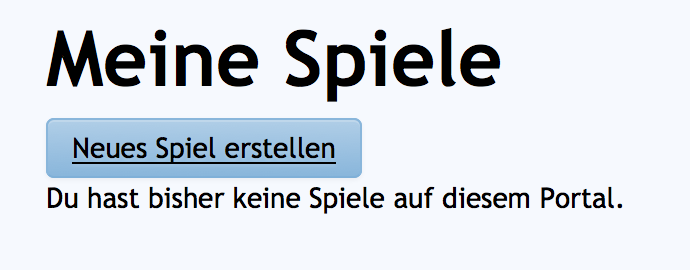
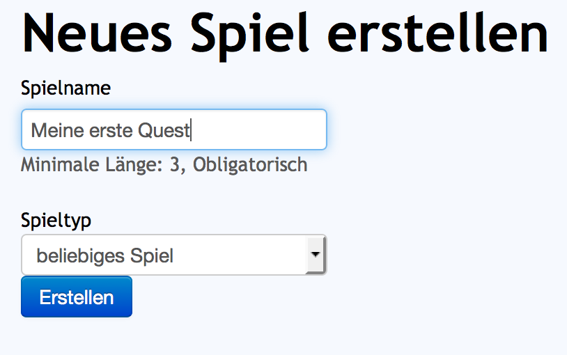

Erstellen einer Quest
Vielen Dank, dass du dich für GeoQuest entschieden hast. In diesem Tutorial erfährst du alles darüber, wie du deine Ideen optimal in unserem Editor umsetzen kannst. Aller Anfang ist natürlich nicht leicht, aber wir hoffen dir den Einstieg so angenehm wie möglich zu machen.
Der erste Schritt auf dem Weg zur eigenen Tour, ist natürlich das Anlegen einer neuen Quest im Portal.
Unter einer Quest kannst du dir im Grunde so etwas wie eine eigene App vorstellen, die du entweder aus der öffentlichen geoquest-App heraus startest oder die wir dir direkt in eine wirkliche eigene App umbauen können.
Um zur Liste deiner Quests zu gelangen, klicke im Menü auf "Meine Spiele".

Hier sollten wenn du neu bei uns bist zunächst keine Quests zu sehen sein. Das können wir aber schnell ändern mit einem Klick auf "Neues Spiel erstellen".

Auf der nun geöffneten Seite kannst du deinem Spiel einen Namen geben. Lasse die Auswahl des Typs zunächst unverändert, da wir mit diesem Tutorial die Grundlagen des beliebigen Typs lehren möchten. In Zukunft werden wir noch viele neue Vereinfachte Spieltypen für spezielle Fälle hinzufügen, aber für den Anfang bleiben wir bei "beliebiges Spiel".
Klicke nun auf "Erstellen".

Wir werden nun zurück zur "Meine Spiele"-Seite gelenkt. Hier sollte die gerade angelegt Quest nun in der Liste zu sehen sein.
Wenn du mehrere Quests anlegst, wird diese Liste schnell wachsen. Von hier aus kannst du alle deine Quests organisieren.
Unter Optionen hast du mehrere mögliche Aktionen:
Editor aufrufen -> Zur Editier-Ansicht wechseln, um die Quest zu verändern.
Administration -> Hier kannst du andere Benutzer zum Mit-Editieren einladen und die Veröffentlichung in der öffentlichen geoquest-App steuern.
Duplizieren -> Hier kannst du die Quest kopieren.
Löschen -> Hier kannst du die Quest löschen.